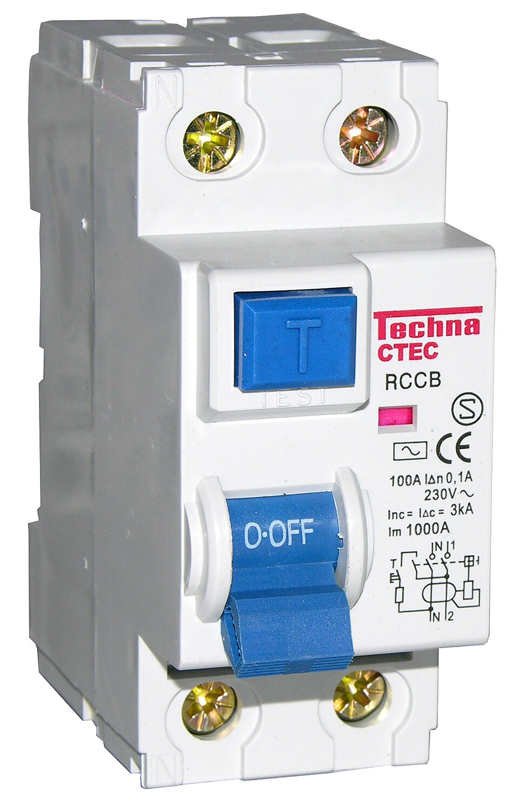

230 V mains, earthing and protection in India
Use what you learned on isolated AC to read an appliance nameplate, interpret a distribution board and follow a supervised measurement session.
Read voltage and frequency from the label
For a common Indian supply, 230 V is the nominal RMS voltage between one phase and neutral, and 400 V is the nominal RMS voltage between phases. The nominal frequency is 50 Hz. Some supply codes list 240 V and 415 V as well. Check the distribution utility’s declared voltage for your location. Use RMS figures when reading a meter, and peak voltage when thinking about what the insulation sees. Arunachal Pradesh supply code · section 2 · Delhi DERC supply code amendment · regulation 4.
- 230 V RMS and 50 Hz mean roughly 325 V peak on a sine wave, with one cycle every 20 ms. Three phases are separated by 120°. The phase-to-phase voltage is about 230 × √3 ≈ 400 V.
- Try it on an unplugged appliance. Find the input label. A marking such as 220–240 V~ 50 Hz 650 W refers to mains input. If 650 W is input power and power factor is 1, 650 ÷ 230 ≈ 2.8 A. For a motor use the stated input current if available. Power factor and starting current also matter.
- Read the output separately. A sealed adapter can accept 230 V AC and supply 12 V DC. Use the voltage and polarity on the output label when testing the low-voltage side. India and Australia use the same electrical principles. Plug fittings, rules and authorisation are local.
Follow the working current and the fault path
Line (L) feeds the load. Neutral (N) carries the normal return current in a single-phase circuit. It can be hazardous, particularly if disconnected upstream. Protective earth (PE) bonds exposed metal on Class I equipment to the installation’s earthing system so protection can act during a fault. A double-insulated Class II appliance relies on its insulation system. Read the markings and the installation documentation with the instructor.


Photo by Jimbob82, resized. Original photo · Public domain.

| Device | What it responds to | What to look for |
|---|---|---|
| MCB | Overload and short-circuit current. | A current rating and a trip curve. It protects the circuit against overcurrent. |
| RCCB | Difference between outgoing and returning current. If some returns through a case, earth or another path, the difference can trigger a trip. | IΔn in mA and a separate current rating in A. A separate overcurrent protective device is needed. |
| RCBO | Both residual current and overcurrent. | A residual-current rating and overcurrent characteristics on the same device. |
An RCCB may see no imbalance if equal current flows through line and neutral, even in a dangerous shock. It supplements protective earthing and safe working. Regulation 44 of the CEA’s 2023 regulations calls for a domestic residual operating current of no more than 30 mA. Use the applicable regulations and standards to select and test equipment. Central Electricity Authority · Safety and Electric Supply regulations.
ASHOK ETUTOR · What is RCCB in Electrical System?, listed by Bharat Skills. Watch how the device compares outgoing and returning current.
Interpret a supervised mains demonstration
Start with an isolated low-voltage trainer as in P03. For the next session, an instructor controls an approved mains trainer, shows the correct instrument and leads for the installation and demonstrates safe isolation and proving a voltage tester. Observe live measurements from the instructor’s designated position. At home, leave outlets, switchboards and mains-side appliance terminals closed and use the example data below.
| Instructor’s measurement | Illustrative reading | What to write in your notes |
|---|---|---|
| Line to neutral | 231 V AC | Supply across a nominal 230 V single-phase load. |
| Line to protective earth | 232 V AC | Could look similar in an intact installation. This voltage reading alone does not establish the condition of the earth path. |
| Neutral to protective earth | 1 V AC | A small reading can arise from load current in neutral. A small or zero reading cannot establish safe isolation. |
| Phase to phase on a 400 V trainer | 401 V AC | Between two different phases. Compare it with the expected phase-to-neutral reading. |
In a supervised session, record the test point, AC mode, load state, measured result and the meter and lead markings. Ask how the instructor proved the tester before and after the check for absence of voltage. Earth continuity, insulation resistance, loop impedance and RCCB trip time are distinct tests with dedicated methods and instruments. An everyday continuity beep cannot certify an installation.
The examples above are illustrative, with no live measurements performed for this lesson. For hands-on training in India, see the DGT Electrician trade curriculum and ask an ITI or training workshop about supervised measurement and isolation exercises. Check work authorisation with the relevant State Electrical Inspectorate and site supervisor.
P03 · Measure AC on an isolated output T07 · Waveforms, RMS and power factor